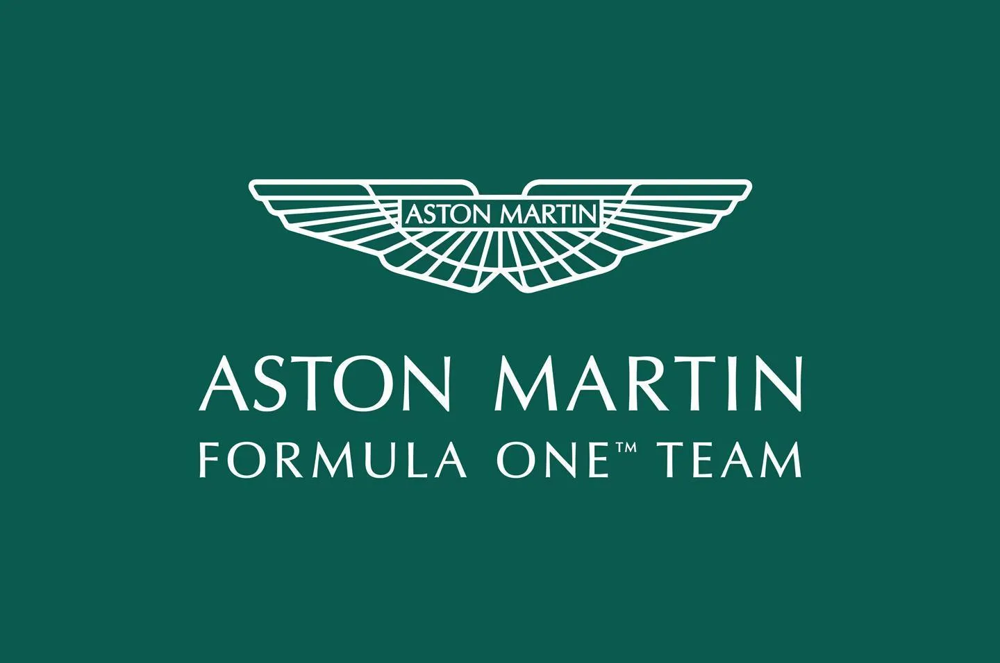

Redbull Racing
30-09-1997(26 yaşında)
Hollanda

Redbull Racing
26-01-1990(33 yaşında)
Meksika

MERCEDES
07-01-1985(38 yaşında)
Birleşik Krallık

MERCEDES
15-02-1998(25 yaşında)
Hollanda

FERRARRI
16-10-1997 (26 yaşında)
Monaco

FERRARI
01-09-1994 (29 yaşında)
İspanya

McLaren
13-11-1999 (24 yaşında)
Birleşik Krallık
McLaren
06-04-2001 (22 yaşında)
Avustralya

Aston Martin Racing
29-07-1981 (42 yaşında)
İspanya
Aston Martin Racing
29-10-1998 (25 yaşında)
Kanada
WILLIAMS
31-12-2000 (23 yaşında)
ABD

WILLIAMS
23-03-1996 (27 yaşında)
Tayland

Alpha Tauri
01-07-1989 (34 yaşında)
Avustralya

Alpha Tauri
11-05-2000 (23 yaşında)
japonya
ALPINE
07-02-1996 (27 yaşında)
Fransa

ALPINE
17-09-1996 (27 yaşında)
Tayland

HAAS F1 TEAM
05-10-1992 (31 yaşında)
Danimarka

HAAS F1 TEAM
19-08-1987 (27 yaşında)
Almanya

SAUBER
30-05-1999 (24 yaşında)
Çin
SAUBER
28-08-1989 (34 yaşında)
Finlandiya
| TAKIMLAR |
|---|
 REDBULL RACING REDBULL RACING |
 MERCEDES F1 TEAM MERCEDES F1 TEAM |
 FERRARI FERRARI |
 MCLAREN MCLAREN |
 WILLIAMS RACING WILLIAMS RACING |
| ALPHA TAURI |
| ALPINE |
| ASTON MARTIN RACING |
| HAAS F1 TEAM |
| SAUBER F1 TEAM |
Helmut Marko, Red Bull'un 2026'ya kadar kendi güç ünitelerini rekabetçi hale getirememesi durumunda 'B Planı' olmadığını söyledi. Red Bull 2024'te Honda motorlarıyla sondan bir önceki sezonuna giriyor. Takım, spordan ayrılan üreticiyi spordan resmi olarak ayrılmalarının hemen ardından getirilen dört yıllık motor dondurma uygulaması boyunca güç ünitelerinin istikrarlı bir şekilde tedarik edilmesini sağlamaya ikna etmeyi başardı. Araştırma ve geliştirmeye ihtiyaç duyulmayacak olması Red Bull için başarılı bir anlaşma oldu. Ancak yeni kural değişikliğinin başlangıcı için Red Bull Powertrains olarak adlandırılan kendi motorlarının üretimini üstlendikleri 2026 için zaman daralıyor. Yeni motorların piyasaya sürülmesine iki yıldan fazla bir süre kala, üreticiler tam anlamıyla araştırma ve geliştirme aşamasındalar ve Red Bull da bu konuda farklı durumda değil. Geçtiğimiz hafta İtalyan medyası Ferrari'nin mevcut 2026 kurallarına uygun bir motorun ilk ateşlemesini tamamladığını bildirdi. Helmut Marko, RBPT'nin kendi ilerlemesinin nasıl gittiği konusunda bilgi verdi.
Max Verstappen, üst üste kazandığı üç Formula 1 şampiyonluğu arasından hangi yılın favorisi olduğuna dair kararını verdi.Verstappen, şampiyonlukları konusunda şunları söyledi: "2021'de insanlar hep son yarıştan bahsediyor ama bence bir şampiyonluk tüm sezon boyunca kazanılır, değil mi?" "2022'de de aynısı oldu. Japonya'daki küçük bir aksaklık, şampiyon olup olmadığınızı anlamak için birkaç dakikanızı daha alır. Benim için bu tür şeylerin pek önemi yok." "Ben sadece yarışı değil, yarıştan sonraki performansımı da analiz ediyorum." "Bu yüzden bu yılın performans açısından kesinlikle en iyisi olduğunu düşünüyorum. Ama ilki en duygusal olanıydı." Verstappen gridde ön sıralarda daha fazla rekabet görmek istese de en iyi performansını sergilemek için buna ihtiyaç duymadığını itiraf etti. "F1'de daha fazla rekabet görmek istersiniz ama benim en iyisini yapmak için başka bir takıma ya da takım arkadaşına ihtiyacım yok." "Her zaman elimden gelenin en iyisini yapmak ve mümkün olan en iyi şekilde hazırlanmak için kendime çok baskı yapıyorum. Zevk aldığım şey bu ve gerçekten baktığım tek şey de bu."
Oscar Piastri, adrenalin bağımlısı olmadığının altını çizerek ekstrem aktiviteler yapmak istemediğini söylese de, tanışmak istediği ünlü kişilerden bahsetti. F1.com'a konuşan Piastri, "Pek çok yarış pilotunun adrenalin bağımlısı olduğunu biliyorum. Benim için yarışmak yeterli adrenalini sağlıyor! Yani çılgınca arzularım yok. Ama dürüst olmak gerekirse bungee jumping'den önce sky diving yapmak isterdim." "Ama bu yapmak için acele ettiğim bir şey değil. Aslında bir savaş uçağına binmek de oldukça havalı olurdu. Tabii kusmadığım sürece..." dedi. Avustralyalı, katılmak istediği bazı etkinlikler ve tanışmak istediği ünlüler hakkında konuşurken, Basketbol dünyasında 'tüm zamanların en iyisi' olarak kabul edilen iki kişiyle tanışmayı çok istediğini itiraf etti. "Michael Jordan ya da LeBron James ile tanışmak çok güzel olurdu." "Özellikle Michael Jordan ile tanışmayı çok isterdim. Yarışlardan bu yana motor sporlarında da pek çok havalı insanla tanışma şansına sahip oldum ama Michael Jordan muhtemelen tanışmak istediğim kişiler listesinin başında yer alır."